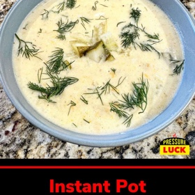

← All recipes
Instant Pot Dill Pickle Chowder

Servings: Yield: 6 · Prep: 10 minutes · Cook: 8 minutes additional time
Ingredients
- 2 tablespoons (1/4 stick) salted butter
- 1 Vidalia (sweet) onion, diced
- 2 medium carrots, peeled and diced
- 2 ribs celery, diced
- 3 cloves garlic, minced or pressed
- 4 cups garlic or chicken broth (I use 4 teaspoons Garlic Better Than Bouillon + 4 cups water)
- 1 (20-ounce) jar kosher dill pickles, diced with 1 cup of their juices reserved (NOTE: I prefer Claussen "Sandwich Slices" for easiest dicing - see video for more explanation. These are found in the refrigerated section of your market). Save some diced pickles for garnish
- 2 pounds Idaho/russet potatoes, peeled and roughly chopped
- 1 (5.2-ounce) package Boursin, (6.5-ounce) tub of Alouette (any flavor of either will do) OR 2/3 cup Garlic Herb Cheese (choose one of these, not all three)
- 1 1/2 cups heavy cream or half-and-half
- 1 teaspoon celery salt or seasoned salt
- 1 teaspoon ground pepper
- 1 teaspoon Old Bay seasoning (optional)
- 3 sprigs fresh dill leaves, plus more for garnish
Directions
- Add the butter to the Instant Pot, hit Sauté and Adjust to the More or High setting. Once the butter's melted, add the onion, carrot, celery and garlic and sauté for 5 minutes, until fragrant.
- Add the broth and pickle juice (but not the pickles) and stir. Top with the potatoes and smooth them out. Secure the lid, move the valve to the sealing position and hit Cancel followed by Pressure Cook or Manual for 8 minutes. Quick release when done.
- Blend for about 1 minute with an immersion blender (preferred and SO much easier/less messy) or, in batches, blend in a blender until puréed. (NOTE: it's okay if you leave it a little chunky - your call - but I like it fully blended).
- Stir in the herb cheese, cream, celery salt (or seasoned salt), pepper, Old Bay (if using), diced pickles, and dill. Stir until the dairy is fully melded. (NOTE: If you don't mind there being less body and chunkiness to the soup, you can give it another blend with the immersion blender). Serve topped with additional pickles and dill, if desired. Also goes great with soft, hot pretzels.
Original source: pressureluckcooking.com